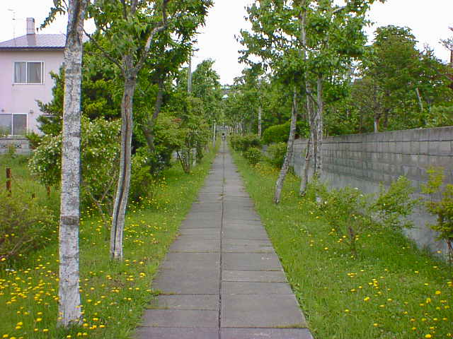

７月１１日（２日目）
旅メモ
- 09:30〜
- 北１８条のホテルは一泊の予定だったので早々に荷物をまとめてチェックアウトし、リュックをしょいつつ
自転車で札幌駅まで行きました。次のホテルのチェックインは１４時以降なので、とりあえずリュックを駅
のコインロッカーに預け２日目がスタート。
- 10:00〜
- まず、最初に向かったのは去年来た時にはなかったサッポロファクトリー。「ショッピング・アミューズメン
ト・レストラン・ホテルなど１４０のショップと施設が集まった日本発・国内最大級のくつろぎのあるショッピン
グセンター」と案内書に書かれています。６つの建物から構成されていてかなり大きい。とても全部はまわ
れませんでした。
こんな感じです。
北大農学部付属植物園に行きました。ここは自転車では入れないので徒歩です。最初はキタキツネや
リスが生息していると本に書いてあったので入ってみましたが、いろんな珍しい植物が見れて良かったと
思います。絵を書いている人や森林浴をしに来ている人が多く、ゆったりとした感じでした。動物に会えな
かったのが残念でした（虫はいっぱいいたけど）。
植物園の写真です。
昼食を食べ、今日泊まるホテルでチェックインした後、北海道大学に向かいました。まず外壁にそって
走ったんですが一周するのにかなり時間がかかりました。植物園も広かったけどここは比べ物にならない
ほど広い。しかも
森の中に建物があるような感じ
で、中に入ると観光者と学生、犬の散歩をしている人な
どさまざまなひとが見られました。ここでの見所は
ポプラ並木
と
クラーク博士の像
の二つです。あとここ
にもキツネやリスが出るらしい。とにかくすごく広いので自転車で良かったと思いつつ、これらを見学し
大学を後にしました。
最後にちょっと離れたところにある
札幌競馬場
と
円山公園
。札幌競馬場はもう終わってしまったのか、
または今日はレースがなかったのか静かでした。残念。円山公園の方も到着したのが夕方でひっそりし
ていました。動物園もしまっていて動物の叫び声が聞こえるだけでした。ちょっと悔いが残ったんですが、
翌日の北広島を期待しつつこの日は終了。

小学校への通学路（３日目）
戻る